Plan: #398, from #380. Every frame below is the real WebGLRendererCore on the mockup scene rebuilt as a game world, noon, 32 px tiles, ground blend on. 1× is game scale.
What each frame is
- Today: each ground kind is one 128 px patch with its pieces baked in, repeated every 4 tiles.
deep_grassandtall_grasspatches carry flowers andmossy_groundcarries mushrooms. They repeat across every field, and nowildflower_patchormushroom_patchhas to be there. - A, strict: the ground becomes layers with no pieces in them: a soil layer and a grass layer, each with three tones, chosen per pixel by the mockup's own world-scale field (
covAtand the tone noise). On top of that come only the pieces that echo no resource: pebble, crack and leaf. Their placement and density are the mockup's own. - B, permissive: A plus the borderline pieces: clover, stone and twig.
- C, A + dressing follows the field: the grass dressing that marks a
grass_patchstays on every tile that has one. It comes in three densities, picked from the field at the tile's centre: full on grass, thinner where the field shows soil. - Full mockup set (not proposed): A's layers with every mockup piece, tufts, flowers and mushrooms included. This is what copying the mockup 1:1 would show, with pieces scattered whether a resource is there or not.
- Mockup: the art mockup's own render of the same scene. Its "ground only" view is the mockup's unlit ground albedo.
Pieces
Each swatch is three of that piece drawn by the art code's decal() on the plain grass layer. The right-hand column is the resource sprite from the atlas that it could be mistaken for. 2× game scale.
| piece | proposal | could read as | ||
|---|---|---|---|---|
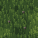 | pebble | safe | nothing at 3 px; stone_outcrop is a 46 px boulder | 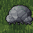 |
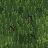 | crack | safe | nothing | |
| leaf | safe | nothing; no leaf litter resource | ||
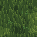 | clover | decision | low greens: scrub_patch, bloodroot | 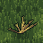 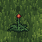 |
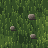 | stone | decision | stone_outcrop (yields small_stone), or a dropped stone | |
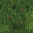 | twig | decision | fallen_logs (yields branch) | 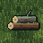 |
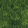 | tuft | only as resource dressing | grass_patch, tall_grass_patch, deep_grass_patch, all cuttable for fibre | 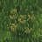 |
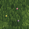 | flower | excluded | wildflower_patch | 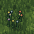 |
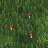 | shroomlet | excluded | mushroom_patch, glowcap, witch_morel, nightshade_bolete | 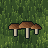 |
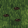 | puddle | mud and moss only | mud_deposit on grass | 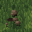 |
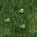 | lily | excluded | a flowering plant | 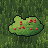 |
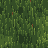 | reedlet | excluded | a standing plant |
Numbers from this scene
- Pieces placed over the 60 × 34 tile scene: strict 2,080; permissive 2,961; full mockup set 6,329.
- Grass dressing in C: 640 tiles, 281 full, 235 medium, 124 sparse. Thresholds: full when the centre's cover is more than 0.10 under the kind's amount, sparse when it is more than 0.05 over.
- Layer patches as rendered here: 30 kinds × 6 patches of 128² = 768 × 3840 RGBA, 11.8 MB. Only 13 kinds have a grass layer; giving the rest three soil patches cuts this to 129 patches, 8.5 MB.
How the frames were made
- The scene is the light-hex probe's: the mockup's tiles as a game world, with grass dressing copied from dev-save tiles of the same ground. It drops the special trees, every plant and the buildings, so the colony shows as bare ground.
- A, B and C swap the ground blend fragment shader in the page, without editing the repo. The layer lookup replaces the one patch fetch. The world field, the layer patches and the pieces come from the art code in Node:
covAt, the soil and grass textures baked at period 128 in three tones, anddecal(). They are passed in as textures on units 10–12, because units 0–8 are taken in this tree. In the game the field would be computed in the shader and the pieces drawn as quads, which the issue sets out. - C's dressing is drawn by the registry's own
grassCoverwith fewer tufts and specks, stamped at ground level. At full density, stamped this way, it matches the game's dressing. - Rendered on SwiftShader at
1947ea7f. Frame time is not measured here. Scripts are in probe/.